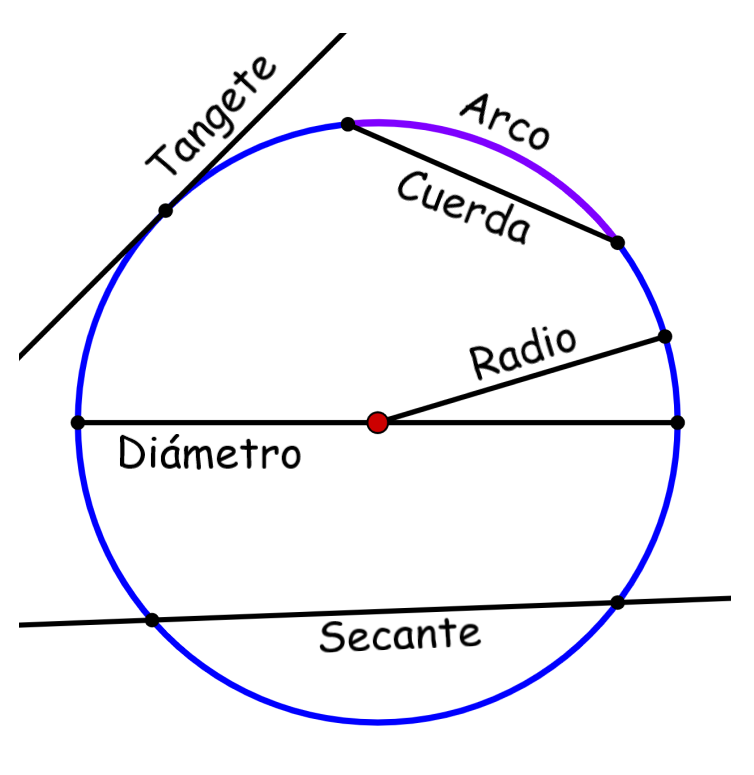

LA CIRCUNFERENCIA
Introducción.
Bienvenidos, la presente página web tiene como finalidad nada más que compartir los conocimientos adquiridos sobre los temas de circunferencias y sus operaciones relativas a ellas, por el material facilitado por la institución y el profesor. Se tratarán los conceptos de los temas mencionados y se verán también ejercicios resueltos para facilitar su comprensión. Espero que se hayan satisfecho también en su totalidad los requerimientos académicos impuestos para esta evaluación.
Sobre la Circunferencia.
¿Qué es la Circunferencia?
De manera formal, una circunferencia se define como el lugar geométrico de los puntos del plano equidistantes de otro, llamado centro de la circunferencia. No debemos nunca confundir el concepto de círculo con el concepto de circunferencia, que en realidad una circunferencia es la curva que encierra a un círculo (la circunferencia es una curva, el círculo una superficie).
En realidad, y de manera más sencilla, una circunferencia es el conjunto de puntos situados en el plano todos a la misma distancia de un mismo punto central, al que llamaremos centro, y del que hablaremos más adelante con detalle en la parte de elementos básicos de la circunferencia.
Elementos básicos
En la imagen expuesta arriba se pueden ver todos los elementos que vamos a nombrar a continuación:
- Centro: punto central que está a la misma distancia de todos los puntos pertenecientes a la circunferencia.
- Radio: pedazo de recta que une el centro con cualquier punto perteneciente a la circunferencia.
- Cuerda: pedazo de recta que une dos puntos cualquiera de una circunferencia.
- Diámetro: mayor cuerda que une dos puntos de una circunferencia. Hay infinitos diámetros y todos pasan por el centro de la circunferencia.
- Recta secante: recta que corta dos puntos cualesquiera de una circunferencia.
- Recta tangente: recta que toca a la circunferencia en un solo punto y es perpendicular a un radio.
Para más información, busque. Circunferencias en Wikipedia.
Conclusión
Hemos desmenuzado el tema de la circunferencia y sus operaciones mediante la aplicación de la teoría facilitada, es importante que este sea provechoso ya que este mismo sienta las bases de muchos otros posteriores que no pueden llegarse a entender en su totalidad si previamente este no se es dominado. También hemos tenido la presencia de otros recursos como de ejercicios resueltos por ejemplo, o de vídeos explicativos de youtube que sin duda agilizan el aprendizaje si se combinan adecuadamente.